SOLUCIONES PERSONALIZADAS A LA MEDIDA DE SU EMPRESA
SOLUCIONES PERSONALIZADAS A LA MEDIDA DE SU EMPRESA
Somos un equipo de profesionales, que desde hace más de 30 años, brinda servicios de laboratorio y consultoría en las áreas de análisis ambientales, control de calidad, mediciones de higiene y seguridad. Nuestro grupo de trabajo interdisciplinario y nuestra amplia trayectoria nos permiten ofrecer una sólida respuesta para los requerimientos de su empresa, con una atención profesional, personalizada, rápida y confiable.
Además de nuestro laboratorio y oficinas en Buenos Aires, tenemos una filial en Córdoba dedicada a monitoreos ambientales, lo que nos permite dar una rápida respuesta a las empresas de todo el país.
Brindar servicios de análisis químicos y ambientales confiables y con los más altos estándares de calidad, ética profesional y compromiso con el desarrollo sostenible a través de una relación personalizada con nuestros clientes.
Ser un laboratorio referente en nuestras áreas de trabajo por nuestro compromiso con el cliente y por brindar servicios eficientes y de calidad a través de la mejora continua.

AMBIENTALES
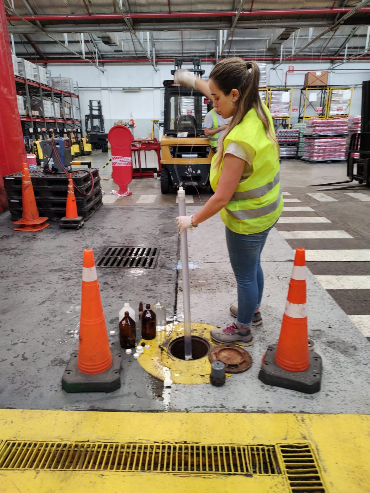
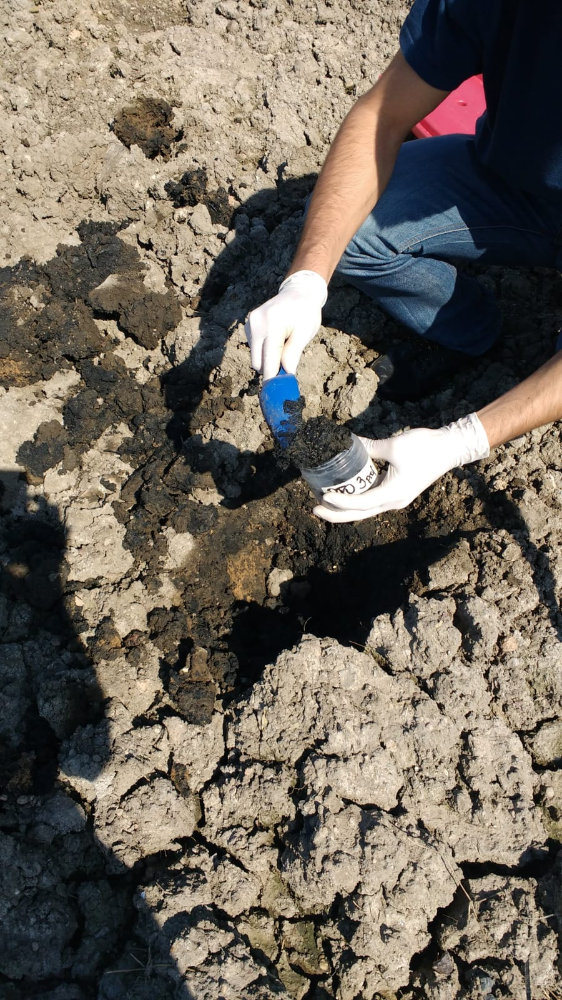
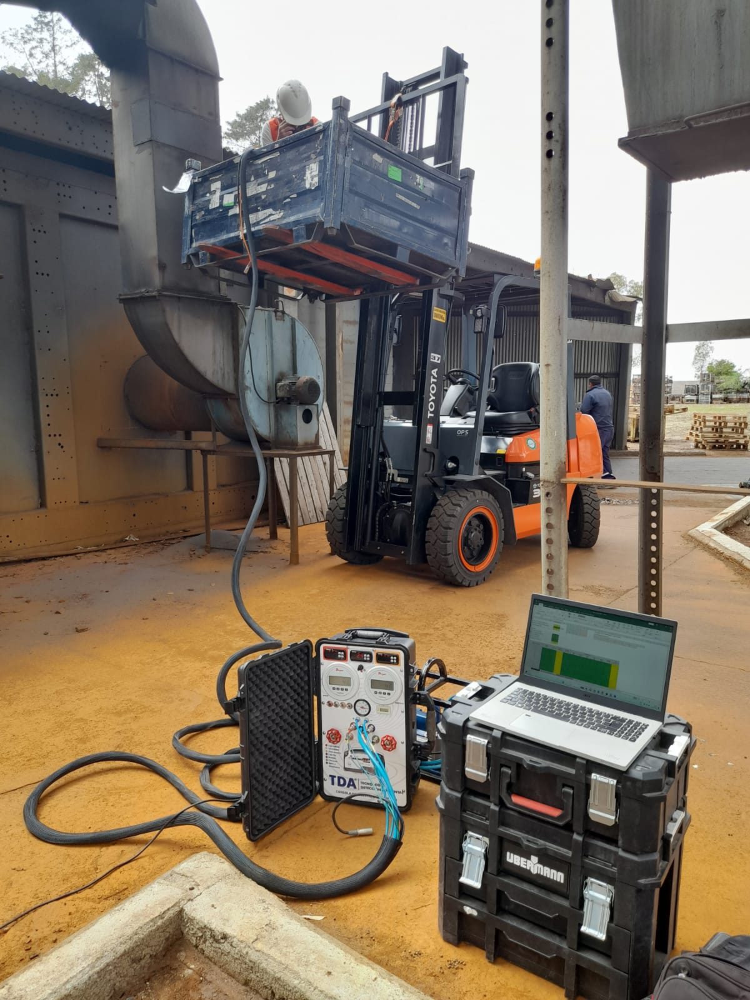

HIGIENE Y SEGURIDAD LABORAL
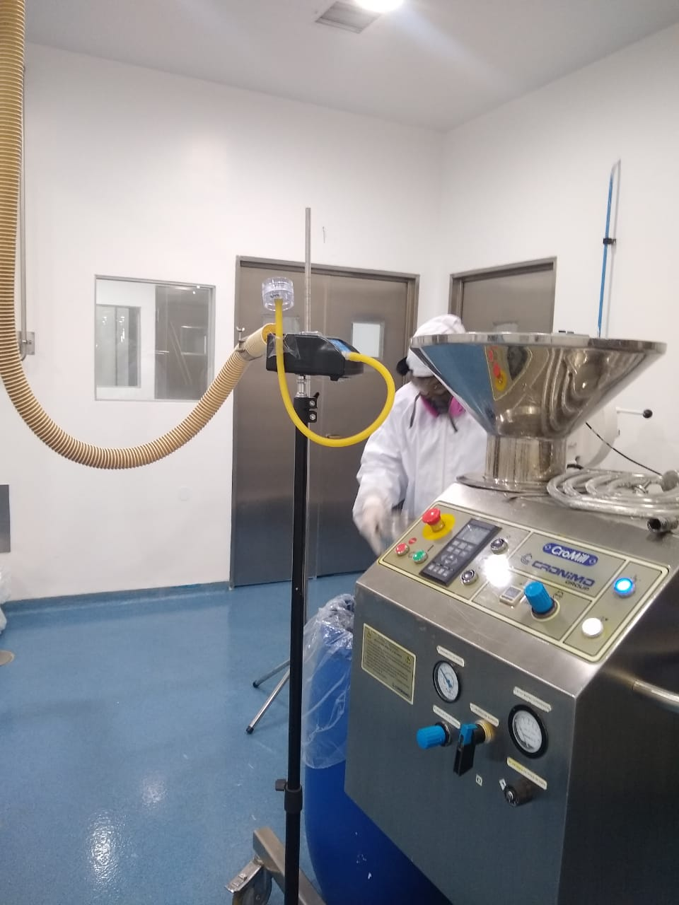
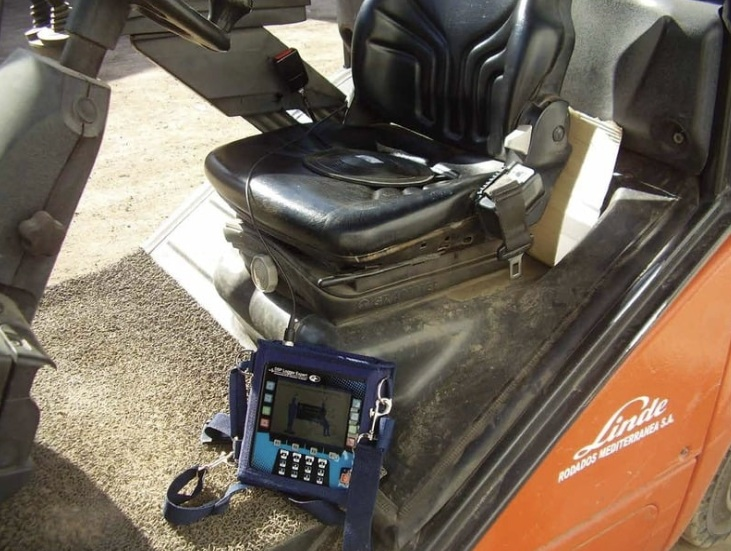
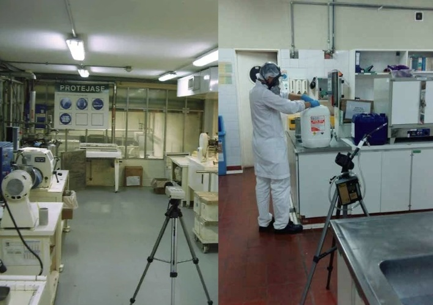

CONTROL DE CALIDAD
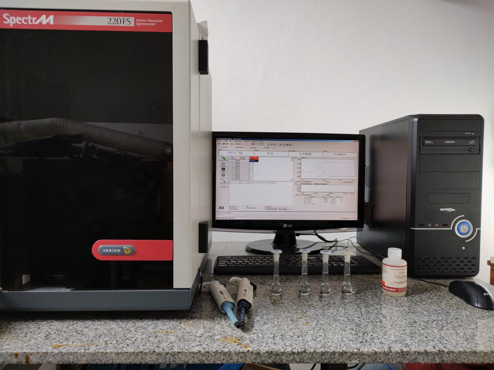
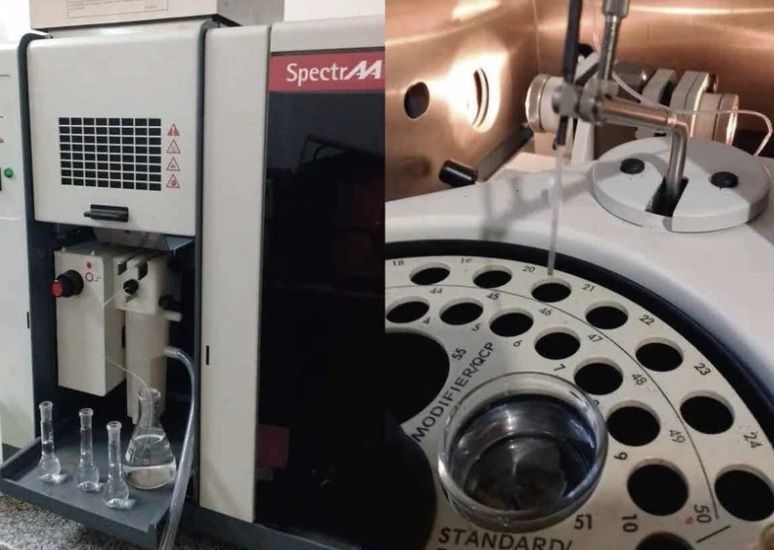
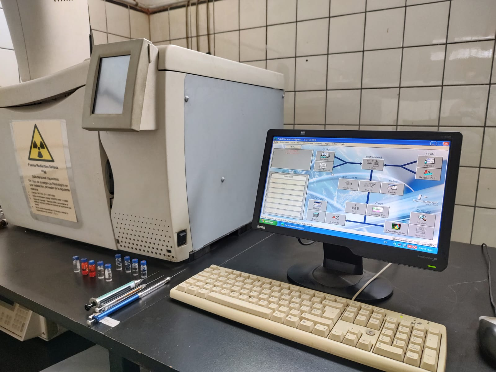

FARMA

SEGURIDAD ALIMENTARIA


Confían en nuestra experiencia para garantizar la calidad y el cumplimiento normativo.
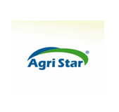
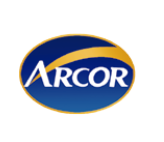
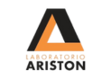
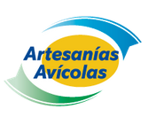
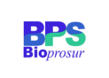
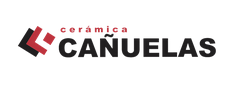
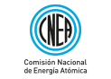
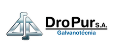
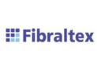
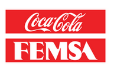

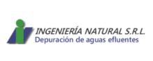
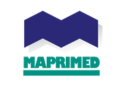
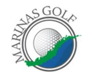
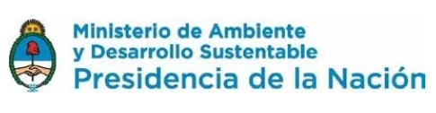
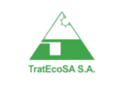
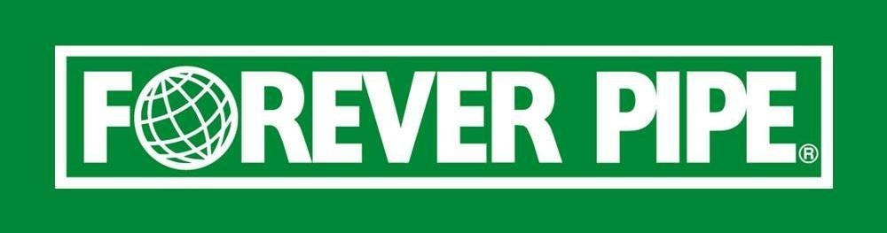
¿Querés que te ayudemos con tu consulta? Completá el siguiente formulario y nos comunicaremos a la brevedad.

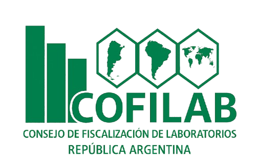
Certificado por COFILAB
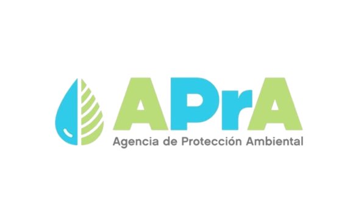
Registro "RELADA" N°29
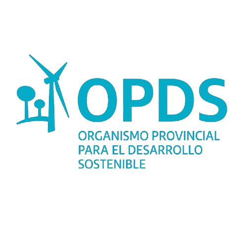
Registro "OPDS" (BsAs) N°26

Registro "ROLA" (Córdoba) N°14